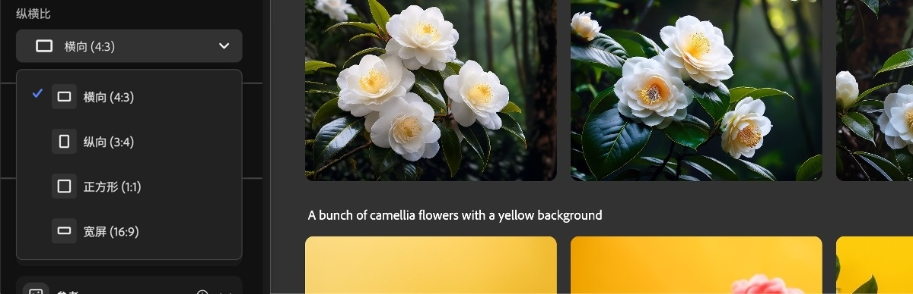
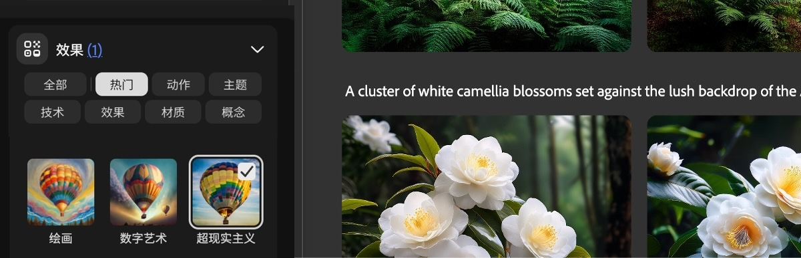

Adobe Firefly 从零上手——五分钟跑通第一次 AI 生图
第一次接触 Adobe Firefly？不用任何 AI 绘画基础，跟着这篇从注册到出图一步步走，顺带摸清新手最该先碰的三个功能。
这篇能带你从完全不懂到用起来——不需要任何 AI 绘画经验，甚至不需要用过任何 Adobe 软件。
它到底是干嘛的
你可以把 Adobe Firefly 想象成一个会画画的翻译官：你用中文或英文把脑子里想的画面用几句话说出来（这叫提示词 prompt），它理解之后用画笔帮你画出来。画出来的结果叫「生成图」，不是手绘的，但质感接近实拍照片或风格化插画，取决于你怎么选。
Firefly 最特别的地方在于它是 Adobe 自家的模型——和 Photoshop、Illustrator 这些你可能已经在用的软件直接打通。这意味着你在 Photoshop 里修照片时，可以直接用 Firefly 的 AI 帮你「擦掉这个人」或者「把右边补成海边」，不用跳到别的平台再导回来。
五分钟上手：从注册到第一次出图
真的只要五分钟。跟着下面做：
- 拿一个 Adobe 账号——如果你用过 Photoshop 或 Creative Cloud，直接登录就行；没有的话在 Adobe 官网点「创建账户」，邮箱注册免费。需要桌面端的话安装包从官方下载拿。
- 开浏览器访问 Firefly——打开你的浏览器（Chrome 或 Edge 最好），输入 Adobe Firefly官网 的地址。登录后你会看到一个干净的工作台：左边是历史记录和收藏夹，中间一个巨大的输入框写着「Describe what you want to create」。
- 写你的第一句提示词——别想太复杂。比如你想画一只橘猫坐在窗台上晒太阳，就写：「一只橘猫坐在窗台上，午后阳光，暖色调」。越具体越好，但不用怕写得不好，第一次随便写就行。
- 选一个纵横比——输入框旁边有一排小按钮，写着 1:1、4:3、16:9、9:16 这些数字。这是选你要的图片形状：方形适合发朋友圈（1:1），宽屏适合做视频封面（16:9），竖屏适合做手机壁纸或 TikTok（9:16）。不确定选 1:1 永远不会错。

- 选「内容类型」——纵横比旁边有三个小选项：艺术、照片、自动。艺术模式画出来像插画，颜色饱和、笔触明显；照片模式追求真实摄影质感，光影和纹理更逼真；自动模式让 Firefly 自己判断。第一次直接点自动就行。
- 点 Generate——中间那个大按钮。然后等几秒，Firefly 会同时吐出 4 张变体，每张都是它理解你描述后的不同解读。
恭喜，你已经用 AI 画出了第一张图。
上手后先玩这三个功能
第一次出图之后别马上关页面——下面三个功能是新手最值得先碰的，每一个都能给你「原来还能这么用」的惊喜。
一、纵横比预设：让图片直接匹配你的用途
刚用过的纵横比其实有很多细节可以玩。Firefly 内置了六组常用比例：1:1 方形适合社交媒体通用、4:3 横屏适合演示文稿配图、16:9 宽屏适合视频帧和 YouTube 封面、9:16 竖屏适合 TikTok 和手机壁纸、3:4 和 2:3 适合打印照片。还有一个「自定义」选项，输入你想要的任意宽高数值就行。
你会发现：同样一句提示词，选 1:1 和选 16:9 出来的构图完全不同——宽屏下 AI 会自动铺开更多背景细节，方形则更聚焦主体。这是 Firefly 的模型在理解比例后主动调整了画面重心，不是简单的裁剪。
二、生成式扩展：一键把窄图拉成宽屏
这个功能要回到 Photoshop 里用，但威力巨大。想象一下：你用手机竖屏拍了一张朋友的照片，现在想把它裁成横屏做公众号封面——上下多出来的空白怎么填？手动用克隆图章一点点补？太慢了，而且接缝明显。
Firefly 的生成式扩展就是为此设计的：在 Photoshop 里用裁剪工具把画布拖出原图边界，然后在任务栏选 Generative Expand，写一句提示词（比如「和原图一样的自然光，背景是咖啡馆内部」），或者干脆留空让 AI 自己延续风格。几秒钟后，空白区域会被自然地「续画」上，接缝处几乎看不出来。

你会发现：留空的时候 AI 会自动延续原图的光照和纹理，效果比你想象中靠谱；但如果你想让扩展区域有特定内容，写几句描述就能精准控制。换一个模型试试也会有差异——Firefly Image 5 做扩展比旧模型更自然。
三、内容安全改写：被拦截时怎么办
有时候你写好提示词点 Generate，进度条转几圈然后什么都没出来——不是你操作错了，是 Firefly 的内容安全模型拦截了。它主要管五类：暴力血腥、成人内容、知识产权（比如精确模仿某在世画家的风格）、肖像滥用（没理由用真实人物姓名生成）、政治敏感。
别担心，被拦截不是封号，换个说法就行。核心原则是：描述视觉特征，不要引用具体事物。比如原来写「模仿梵高风格的向日葵」，改成「厚涂油画风格，金黄色的花束，笔触浓烈」——不说梵高的名字，只说风格特征。原来写「汤姆克鲁斯在机场」，改成「短发男性，黑色风衣，在机场跑道前」——不说真实姓名，只说人物特征。这样既能达到你想要的效果，又能通过安全过滤。遇到拿不准的情况可以去Adobe Firefly文档查具体的安全规则。
小白的三个常见疑问
收藏夹为什么会自己消失？
这是 Adobe 在 2025 年 8 月改的规则：浏览器端保存的收藏，30 天后自动永久删除，而且不会发任何提醒。很多人一个月后打开 Firefly 发现收藏夹空了，一脸懵。解决办法有两个：一是每次生成完满意的图就下载到本地；二是转存到生成历史里（悬停图片 → 点「在生成历史中打开」→ 保存），生成历史目前没有过期限制。
为什么选照片模式出的图还是像画？
艺术、照片、自动这三个模式只是引导模型的方向，不是绝对开关。有时候你的提示词里本身就带有「卡通」「插画」这类词，照片模式也会往艺术方向靠；反过来，如果提示词写的是「实拍、佳能相机、自然光」，艺术模式也能出接近照片的结果。不确定的时候用自动，让模型自己判断最省心。
credits（额度）会消耗完吗？
会，但不用慌。Firefly 免费版每月有固定额度，用完了等下个月刷新，或者升级付费版。额度消耗和生成的图片数量挂钩——每次点 Generate 出 4 张变体，算一次消耗。网页端生成和 Photoshop 里的生成式编辑共用同一套额度，注意着点用就行。
下一步去哪玩
今天就先到这里——你已经能独立完成从提示词到出图的完整流程，也知道了被拦截怎么改、收藏夹怎么保。如果想进阶，推荐去把「生成式填充」也学了：在 Photoshop 里圈选一个区域让 AI 帮你擦掉或替换内容，和生成式扩展是兄弟功能，日常修图用得比扩展还多。考虑到国内访问速度，这套资料在 GitHub、Gitee、GitCode 三个仓库都有备份，随你习惯选哪个。